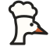

<!doctype html><html lang="zh"><meta charset="utf-8"><meta name="viewport" content="width=device-width,initial-scale=1"><title>Kitchen Path · Logo</title>
<style>*{box-sizing:border-box}body{margin:0;background:#f4f1eb;color:#242321;font-family:Arial,sans-serif}main{max-width:1060px;margin:48px auto;padding:0 28px}header{font-size:12px;letter-spacing:2px;color:#80796f;margin-bottom:28px}.hero{background:#fffdf8;border-radius:20px;padding:80px 48px;display:flex;align-items:center;justify-content:center;gap:24px}.hero img{width:100px;height:100px}.word{font-size:54px;font-weight:600;letter-spacing:-2px}.notes{font-size:15px;line-height:1.8;color:#6d685f;margin:24px 0}.grid{display:grid;grid-template-columns:1.7fr 1fr;gap:20px}.card{background:white;border-radius:16px;padding:30px}.label{font-size:11px;letter-spacing:2px;color:#928c84;margin-bottom:26px}.nav{display:flex;align-items:center;gap:10px;border-bottom:1px solid #eee;padding-bottom:18px;font-size:20px;font-weight:600}.nav img{width:32px;height:32px}.sizes{display:flex;align-items:center;gap:26px;height:56px}.sizes img:nth-child(1){width:24px}.sizes img:nth-child(2){width:32px}.sizes img:nth-child(3){width:48px}.sizes img:nth-child(4){width:64px}.app{width:90px;height:90px;background:#e8b394;border-radius:23px;display:grid;place-items:center}.app img{width:67px}.bottom{display:flex;align-items:center;justify-content:space-between;margin-top:28px}a{color:#a74e2c;font-size:13px}@media(max-width:650px){.hero{padding:50px 20px;gap:12px}.hero img{width:64px;height:64px}.word{font-size:32px;letter-spacing:-1px}.grid{grid-template-columns:1fr}main{margin:24px auto}}</style>
<main><header>KITCHEN PATH / IDENTITY CONCEPT 01</header><div class="hero"><span class="word">Kitchen Path</span></div><p class="notes">长颈、尖喙、厨师帽。用三个可辨认的特征，让标志与产品里的大鹅 chef 对应；陶土橙只留在喙部。</p><section class="grid"><div class="card"><div class="label">IN THE HEADER</div><div class="nav">Kitchen Path</div><div class="bottom"><div class="sizes"></div></div></div><div class="card"><div class="label">APP ICON</div><div class="app"></div></div></section><p><a href="kitchen-path-logo.svg" download>下载 SVG 标志</a></p></main></html>
